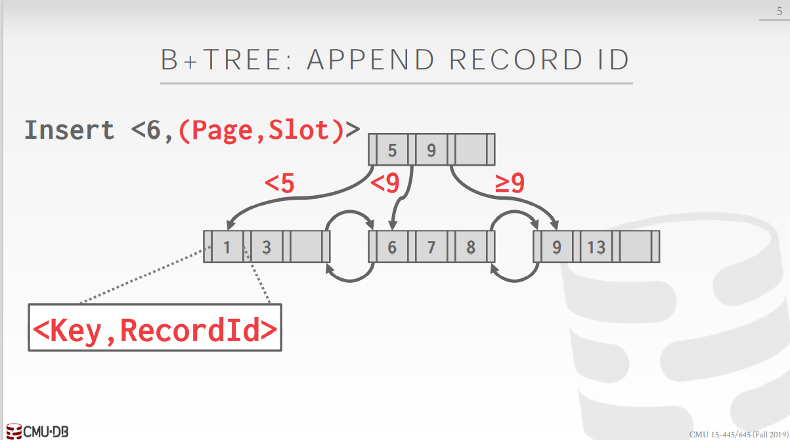
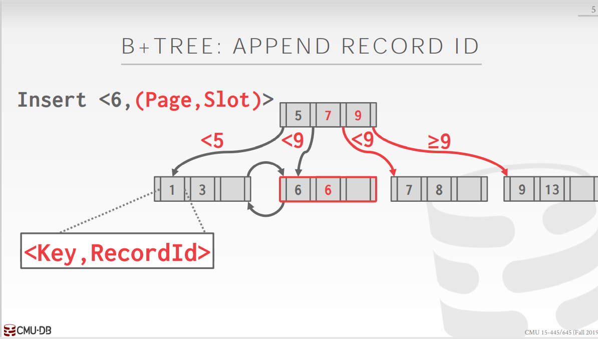
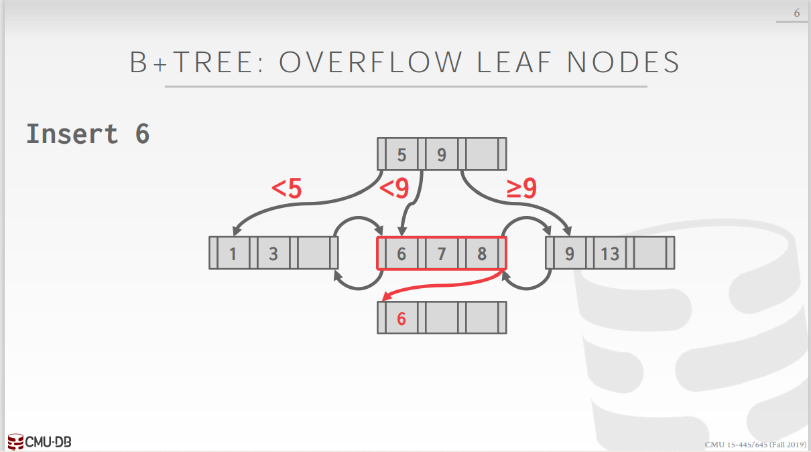
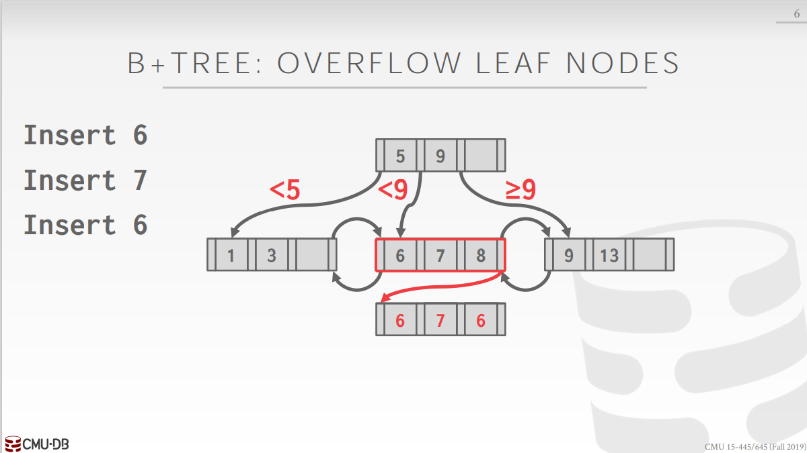
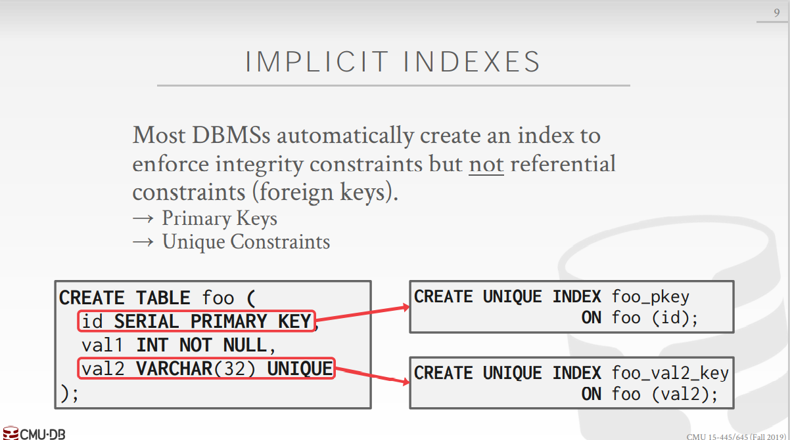
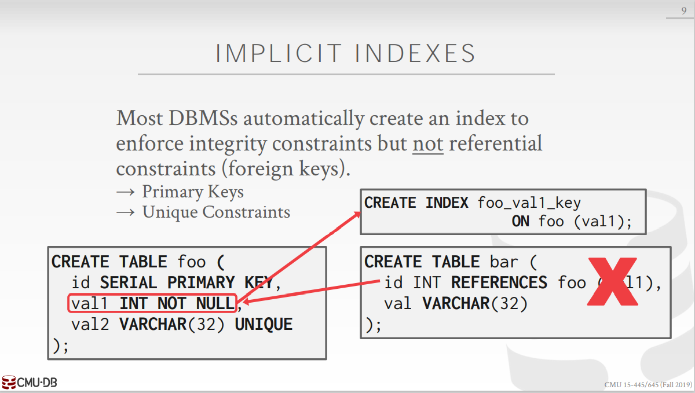
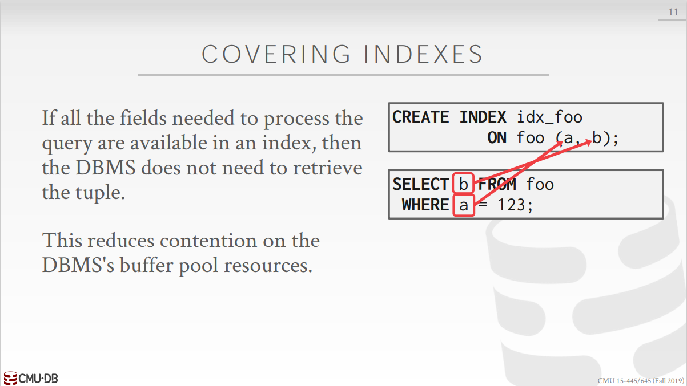
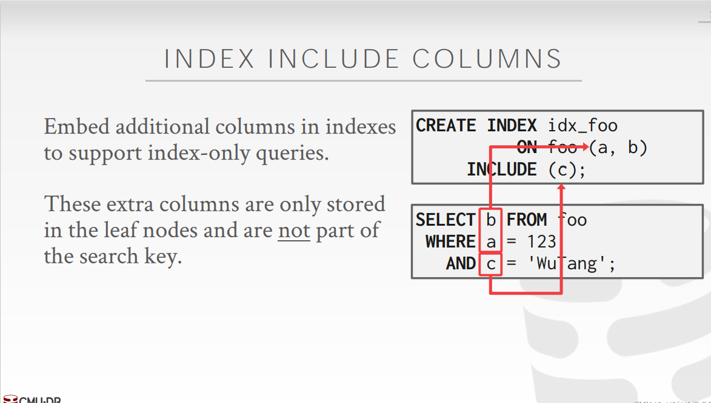
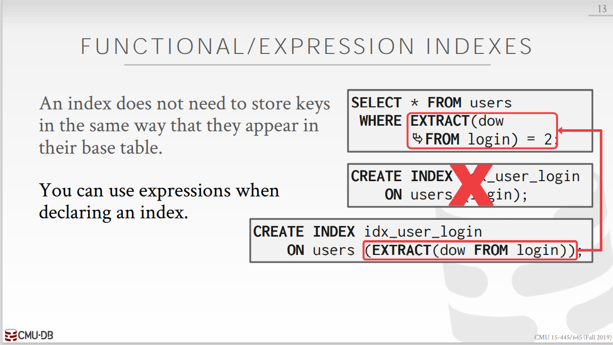
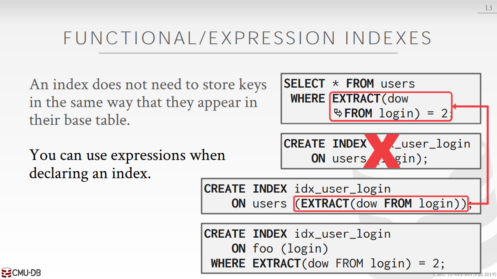

[CMU15445]:树索引2
Duplicate keys
在B+树中，当插入重复的key时，通常有两种方案
Append Record ID
Record ID即一个tuple的page id + offset, 代表了其物理位置，是唯一的，该方法的思想是将record ID添加到key的后面作为key的一部分，这样就能够的到唯一的key
该方法基本上不需要修改B+树的数据结构，实现起来较为简单，大多数厂商都是采用这种方法

在上图中，添加了record ID，即(Page, Slot)作为key的后缀，树中已有的6与即将插入的6将会拥有不同的key, 所以和普通的B+树插入过程是一样的

Overflow leaf nodes
在该方法中不再存储record id,而是将重复的key存储在另一个page之上，这个page被称为overflow page, 在该page上的数据不同于普通的叶子节点，可以是无序的，还可以是重复的


如果需要在overflow page上搜索数值，就只能采取线性查找，因为其中的数据是未排序的
索引相关技术
Implicit Index
当今许多DBMS为了保证完整性约束(integrity constraints)会自动地在某些列上建立索引，如主键等，这些列的共同特性就是它们一定是唯一的

这里的SERIAL是一个PostgreSQL中的关键字，可以看看下面这个链接
https://www.postgresqltutorial.com/postgresql-serial/
上面的图片中，id和val2都是唯一的，所以DBMS会自动地给他们建立索引，此外， val1并不能确保唯一性，所以并不会给它建立索引

paritial Index
部分索引，有时我们只需要对表中的部分数据建立索引，比如下面的sql语句
1
2
3CREATE INDEX idx_foo
ON foo (a, b)
WHERE c = "WuTang"只会在c = “WuTang”的行上以a, b两列建立索引
部分索引的好处：
- 减少很多不必要的数据，以防他们污染缓冲池
- 减小了索引树的高度，可以更快的查询数据
覆盖索引
当进行一次查询所需要的全部数据都在索引当中时，这种情况就被称为覆盖索引

覆盖索引的优点在于减少了磁盘I/O的次数，由于所需要的数据都在索引当中，索引又在内存当中，所以不需要进行磁盘I/O, 但缺点是
索引会占据缓冲池的空间
Index Include Column
该技术思想是在B+树的叶子节点中加上额外的列数据，比如有如下查询

当通过a, b 构成的索引找到叶子节点时，可以顺带获得c中所需要检查的c数据，但该技术支持的厂商比较少
注：附加的数据只存储在叶子节点当中，内部节点并不改变，所以附加数据并不影响search key, 也并不需要占据多少额外的内存空间
functional/expression index
建立索引时，不仅仅可以基于某些列建立索引，还可以基于他们衍生出的表达式建立索引

上面的
EXTRACT (dow FROM login)就是login列衍生出的表达式，如果仅使用login列建立索引，对于上面这个查询来说就没有什么用处事实上，该方法与partial index有着异曲同工之妙

本博客所有文章除特别声明外，均采用 CC BY-SA 4.0 协议 ，转载请注明出处！